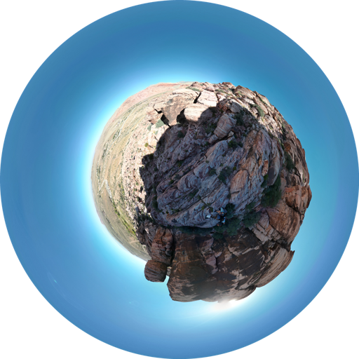

360 photo order of operations
This is mostly for me to remember the process so I can keep updating my 360 photos page.
I take 360 photos with my DJI Mini 3 Pro. It saves 8192x4096 jpgs that are about 8mb each. I use the original full resolution images for the fullscreen panos on the viewer page

- Take all the original 360 photos off the drone and put them in ../imgs/360/tmp
-
Run a photoshop batch action that you have saved previously
If you don't have the batch command saved or are just doing it to one image then start recording an action by going to window > Actions and in the window start recording- Flip the image vertically
- Apply a Polar coordinates distortion filter to the image
- Squish the image horizontally so it's a square (4096x4096)

The outputs from that should look like this
Now finally to get the right size and shape I had gpt3.5 write a couple scripts to crop them into circles and divide the resolution in half until you're happy with it.
- Run ../python/circlifier.py to turn them all into circle pngs
- Run ../python/shinker.py until it is small enough for your use (I run it 3 times so the images are 512x512 for better load times.)

Finally if you're me, update the captions and imageFiles arrays in ../360-photos/ and also the imagePaths in ../360-photos/panorama.html